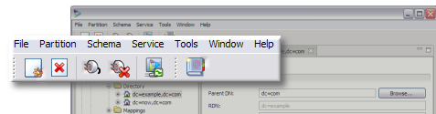
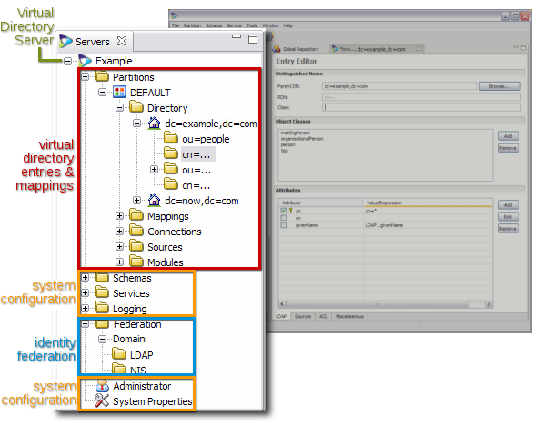
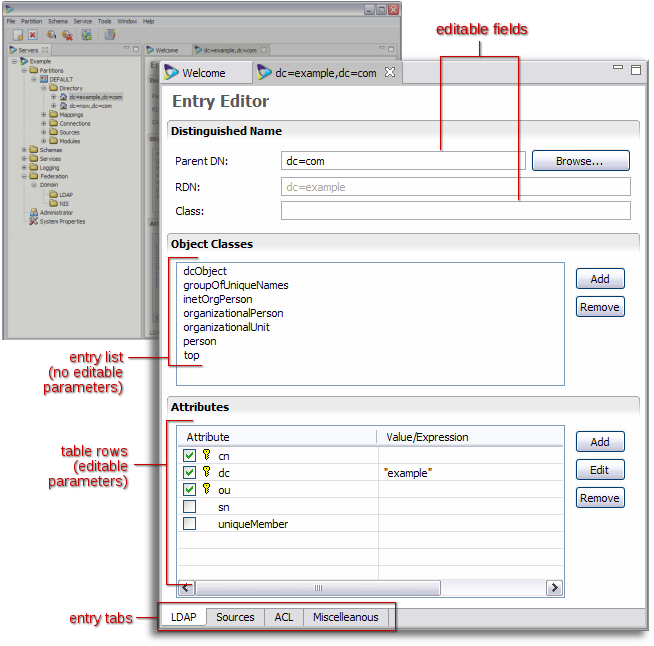
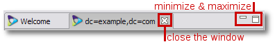
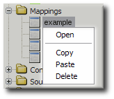
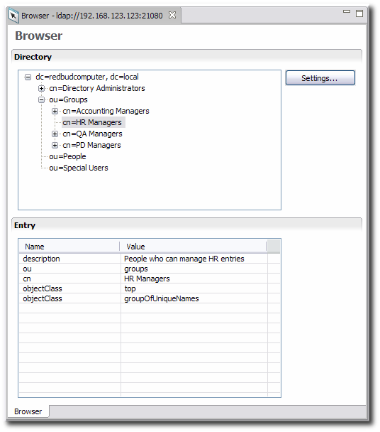
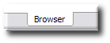

Chapter 4. Using Penrose Studio
Penrose Studio is the graphical interface to access, modify, and manage Penrose Server and its entries. This is a simple, elegant interface, making it much easier to configure complex mappings, virtual directory hierarchies, and identity federation, synchronize NIS and LDAP environments, resolve UID conflicts, and migrate data between servers.
This chapter describes how to install and start Penrose Studio and gives an overview of its menus and different areas.
4.1. Installing Penrose Studio
IMPORTANT
Penrose Studio requires JDK 1.5.0 or higher be installed. See Section 2.2, “Required Software” for instructions.
4.1.1. Supported Platforms
Penrose Studio is supported on three platforms:
Red Hat Enterprise Linux 4.7, 32-bit and 64-bit
Red Hat Enterprise Linux 5.2, 32-bit and 64-bit, including virtual guests
Microsoft Windows XP and Server 2003
4.2. Starting Penrose Studio
IMPORTANT
If you have problems connecting to Penrose Server from Penrose Studio, check the Penrose Server configuration and make sure that the java.rmi.server.hostname in the /opt/vd-server-2.0/conf/server.xml files has been changed to the specific hostname or IP address of the Penrose Server host machine, rather than using the default value of localhost.
4.2.1. Starting Penrose Studio on Red Hat Enterprise Linux
To start Penrose Studio on Red Hat Enterprise Linux:
Open the Penrose Studio home directory.
cd /opt/vd-studio-2.0
Run the
studiocommand. For example:./vd-studio
Expand the server listed in the left to connect to a Penrose Server instance.
4.2.2. Starting Penrose Studio on Windows
To launch Penrose Studio on Windows:
Open the Start menu.
Select Identyx, then the Studio menu item.
NOTE
The executable file for Penrose Studio is named
studio.exein theC:\Program Files\Identyx Corporation\VD Studio 2.0directory.Expand the server listed in the left to connect to a Penrose Server instance.
4.3. Looking at Penrose Studio
Penrose Studio is very simple to navigate. There are two main sections. The navigation tree on the left organizes all of the partitions, directories, mappings, and other configurations for a Penrose Studio instanc. The main window displays and edits entries and contains the integrated LDAP directory browser.
Figure 4.1, “Penrose Studio Window” shows the major sections of the Penrose Studio interface.
The File manages servers. All if the actions in the file menu are mirrored in the icons below it, managing the Penrose Server instance by stopping and starting it, synchronizing the Penrose Studio changes, and adding and deleting server entries.

Figure 4.2. Top Menu
Three other menus in the top menu, the Partition, Schema, and Service menus, have the same operations that are available by right-clicking on the corresponding folders in the server navigation areas, such as exprting a partition, importing a schema, or configuring a new service.
Both the Tools menu and the last icon below the top menu open Penrose Virtual Directory's LDAP browser.
The last menu, Window, controls which of the three sections in the lower window are visible, meaning the server navigation area, main entry window, and validation window.
The server window, shown in Figure 4.3, “Server and Entry Navigation”, is a hierarchical organization of the server, its partitions, mappings, sources, connections, and repositories along with its backend configuration settings, schema, logging, plug-ins, and services.

Figure 4.3. Server and Entry Navigation
Double-clicking or opening any entry in the server window opens the editor for that entry in the main window, as in Figure 4.4, “Main Window for Editing Entries”.

Figure 4.4. Main Window for Editing Entries
The configuration of the entry can be changed in several areas:
Changing the descriptions in fields and adding or removing Java classes which define functionality
Adding or removing attributes
Changing the parameters set for attributes; entries in table rows can be double-clicked to allow additional configuration options
Depending on the complexity or type of entry, there may be tabs at the bottom of the main window which open additional editing windows for the entry or browsers to display the virtual directory or entry hierarchy.
All of the windows and the entries within the windows are tabbed, to keep the overall navigation clean and easy to view.
Every window, meaning the server, entry editor, and validation windows, is controlled independently. To minimize or maximize the window in the Penrose Studio space, click the small line and box icons in the right corner of the entry. To close the window, click the X icon by the window name.

Figure 4.5. Window Controls
NOTE
Changes to an entry are saved when the window is closed.
4.4. Editing, Copying, and Deleting Entries
Almost every entry for the virtual directory configuration — such as mappings, subtrees, repoositories, sources, and connections — has several options available to open, edit, delete, copy, or paste the entry. This is illustrated for a mapping in Figure 4.6, “Entry Menu Options”. Some kinds of entries, including partitions and schema, can be imported and exported.

Figure 4.6. Entry Menu Options
4.4.1. Viewing and Editing Entries
The editor for any entry is also the way to view the entry. To open, view, or edit an entry:
Navigate to the entry in the server window.
Right-click the entry to view or edit.
Select Open from the menu.
The Entry Editor opens in the main window.
4.4.2. Deleting Entries
To delete any entry (and any sub-entries):
Navigate to the entry in the server window.
Right-click the entry to delete.
Select Delete from the menu.
Confirm the deletion when prompted.
4.4.3. Copying Entries to Another Penrose Server Instance
The copy and import options in Penrose Studio make it very simple to duplicate the exact configuration of one Penrose Server instance to another Penrose Server without having to edit multiple files.
Navigate to the entry in the server window.
Right-click the entry to copy.
Select Copy from the menu.
Open the second Penrose Server entry and navigate to the area to paste the duplicate entry.
Right-click the folder or entry to paste the copied entry.
Select Paste from the menu.
The pasted entry is listed with the second Penrose Server entries.
4.5. Browsing the LDAP Directory
Penrose Studio also provides a built-in LDAP directory browser, which can be used to view the virtual directory or any of the sources or connections for the virtual directory.

Almost every virtual directory configuration entry has a browser tab at the bottom of its entry window, to view the entries within the source or connection.

The browser can also be opened in the top menu or by clicking the browser icon in the top menu.

When the ldap browser is opened through the menu options, the connection information has to be entered in a dialog box, then the browser opens. When choosing a virtual directory entry to browse, the connection information is already given.